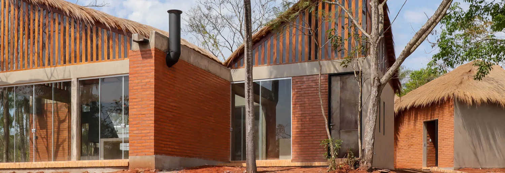
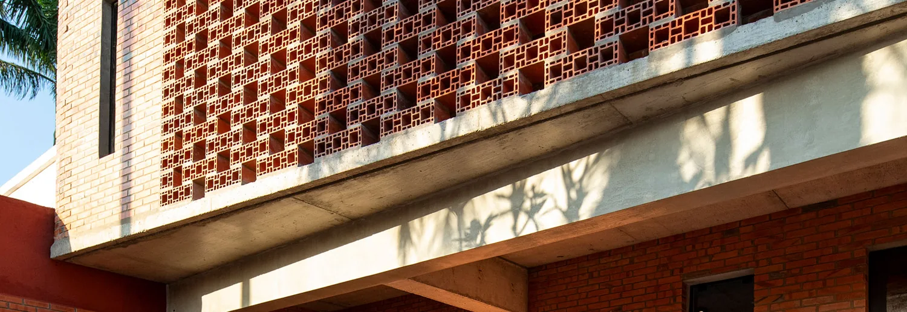

Vivienda
Arquitectura y construcción en Paraguay
Arquitectura que
nace del lugar.
Diseñamos y construimos espacios que responden al paisaje, al clima y a tu manera de habitar.
Explorar proyectos01 Portafolio
Proyectos seleccionados.
Viviendas, reformas y edificios que muestran cómo cambian las decisiones de diseño según el lugar y las necesidades de cada proyecto.
06 proyectos
02 Enfoque bioclimático
Diseñar con el clima.
En Paraguay, una casa puede ganar confort desde el plano. Estudiamos cómo entra el sol, por dónde corre el aire y qué sombras ofrece el terreno para tomar mejores decisiones desde el inicio.
- 01 Orientación y sombra
- Aprovechar la luz natural y proteger los espacios del sol intenso.
- 02 Ventilación natural
- Ubicar las aberturas para favorecer el paso del aire.
- 03 Materiales y paisaje
- Elegir sistemas y materiales según las condiciones de cada sitio.

03 Servicios
Del terreno a la obra.
El estudio acompaña el diseño, la planificación y la construcción. También evalúa inmuebles existentes para orientar reformas y resolver problemas constructivos.
01Proyecto arquitectónico
Estudio del terreno, anteproyecto y documentación de arquitectura para viviendas, edificios y otros programas.
Explorar el servicio02Construcción
Planificación y ejecución de obras, con atención a la coordinación de etapas y a las decisiones constructivas del proyecto.
Explorar el servicio03Reformas y ampliaciones
Evaluación de lo existente para reorganizar, ampliar o renovar espacios según sus nuevos usos.
Ver reforma en Nazareth04Consultoría técnica
Asesoramiento para identificar el origen de problemas constructivos y definir alternativas de intervención.
Consultar sobre patologías05Documentación para crédito de vivienda
Preparación de planos y presupuesto de construcción para presentar una solicitud de préstamo hipotecario para vivienda.
Ver información de financiamiento
04 El estudio
Biocons Arquitectos.
Somos un estudio de arquitectura y construcción con sede en Asunción. Trabajamos con las condiciones de cada terreno y las necesidades de quienes van a habitarlo, desde el primer planteo hasta la obra.
En los proyectos del portafolio participan los arquitectos Nicolás Morales Saravia y Cheli Sakoda.
Leer el blog del estudio05 Contacto
Contanos qué querés construir.
Escribinos para conversar sobre tu terreno, una reforma o la idea que querés llevar a obra.
Tte. Jara Troche 347, Asunción +595 21 203 975